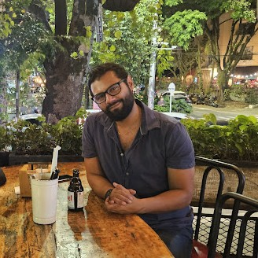
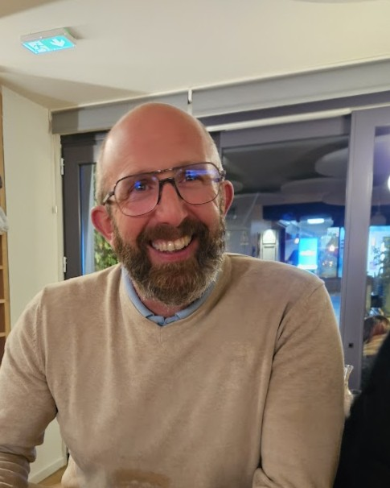
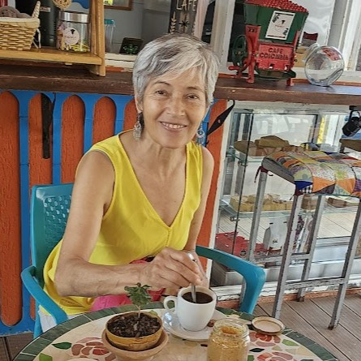
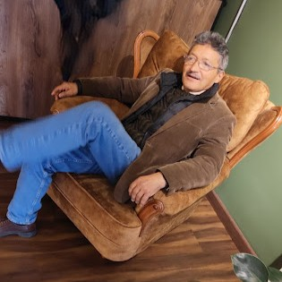

Natalia Sánchez
Project Manager in Tech & Data Analytics
Expertin für Technologieprojektmanagement und Datenanalyse für den kanadischen Markt. Leitet digitale Transformationsinitiativen mit Fokus auf messbare Ergebnisse.
Strategische Allianzen
Wir glauben an kollektive Intelligenz. GPMF operiert unter einem multidisziplinären Experten-Netzwerkmodell. Wir aktivieren spezialisierte Senior-Berater je nach spezifischem Bedarf jedes Projekts und verknüpfen das exakte Talent, das Ihre Herausforderung erfordert.
Strategische Allianzen
Project Manager in Tech & Data Analytics
Expertin für Technologieprojektmanagement und Datenanalyse für den kanadischen Markt. Leitet digitale Transformationsinitiativen mit Fokus auf messbare Ergebnisse.

Architekt & Design-Experte
Architekt spezialisiert auf internationales Design und Transformationsprozesse für den Immobilien- und Gastgewerbemarkt.

Strategischer Berater: Französischer Einzelhandel & Marktzugang
Strategischer Berater: Marktzugang und französischer Einzelhandel, Verhandlungen und territoriale Expansion. +15 Jahre Erfahrung im Einzelhandels- und Konsumgüterökosystem (FMCG) in Frankreich.
Audit & Finanzstrukturierung
Spezialist für Unternehmensbuchhaltung und strategische Audits. Stellt sicher, dass Expansionsprozesse und neue Geschäftsmodelle eine makellose finanzielle Absicherung haben.
Politikwissenschaftler Experte für Sicherheit und öffentliche Politik
Politikanalytiker spezialisiert auf Sicherheit und öffentliche Politik. Bietet strategischen Kontext für Projekte, die Verständnis des politischen und regulatorischen Umfelds erfordern.

Landwirtschaftliche Entwicklung & Nachhaltigkeit
Visionärin des ländlichen und landwirtschaftlichen Sektors durch das Projekt La Finca La Granja. Bringt das notwendige technische und praktische Wissen für Investitions- und Entwicklungsprojekte im Agrarsektor.
Markenbild-Stratege & Art Direction
Grafikdesigner mit über 16 Jahren Erfahrung in Amerika und Europa. Spezialist darin, Unternehmenskonzepte in innovative visuelle Identitäten zu übersetzen, Marken global zu positionieren.

Datenarchitektur & KI
Systemingenieur, Datenarchitekt und Business Analyst. Leitet den Einsatz von KI-Lösungen für Unternehmen.

Projektentwicklung & Gastgewerbe
Führende Kraft hinter der Positionierung von Casa Normandía. Experte für Ökosystementwicklung, Immobilienverwaltung mit Ertragswert und Strategien für hochwertiges Gastgewerbe.
Back-End Developer
Entwickler spezialisiert auf Technologieökosysteme und Datenbanken. Entwirft und implementiert effiziente Softwarearchitekturen mit Sprachen wie Python und TypeScript.
Finanzen & Buchhaltung
Wirtschaftsprüferin spezialisiert auf solide Finanzstrukturierung für Expansionsprojekte und internationale Operationen.
Business Intelligence — Prozessreengineering und operative Effizienz
Spezialistin für Business Intelligence und Prozessoptimierung. Verwandelt Daten in strategische Erkenntnisse und verbessert die operative Effizienz von Unternehmen.
Assoziierte Firmen
Unternehmensfirma
Firma spezialisiert auf Finanzprüfung und Unternehmensberatung für internationale Unternehmen.
Unternehmensfirma
Agentur für Softwareentwicklung und maßgeschneiderte technologische Lösungen für Unternehmen.
Unternehmensfirma
Designstudio für Grafikdesign und Branding spezialisiert auf visuelle Unternehmensidentität.
Unternehmensfirma
Unternehmen spezialisiert auf Gourmetprodukte und hochwertige Gastronomieberatung.
Erweiterte Zusammenarbeit
Wir aktivieren Squads je nach Herausforderung: Data Scientists, Rechtsexperten, wissenschaftliche Diplomaten, strategische Storyteller. Alles integriert unter demselben Playbook.
Transnationale Teams koordiniert in drei Zeitzonen.
Flexible Verträge: Pod, Retainer oder Sprint-Beschleunigung.
Kulturelle und technische Due Diligence vor jeder Partnerschaft.
Wir suchen Firmen und Fachleute mit Boutique-DNA und Fokus auf Ergebnisse. Wissenschaft, Technologie, Daten, Diplomatie und Expansion.